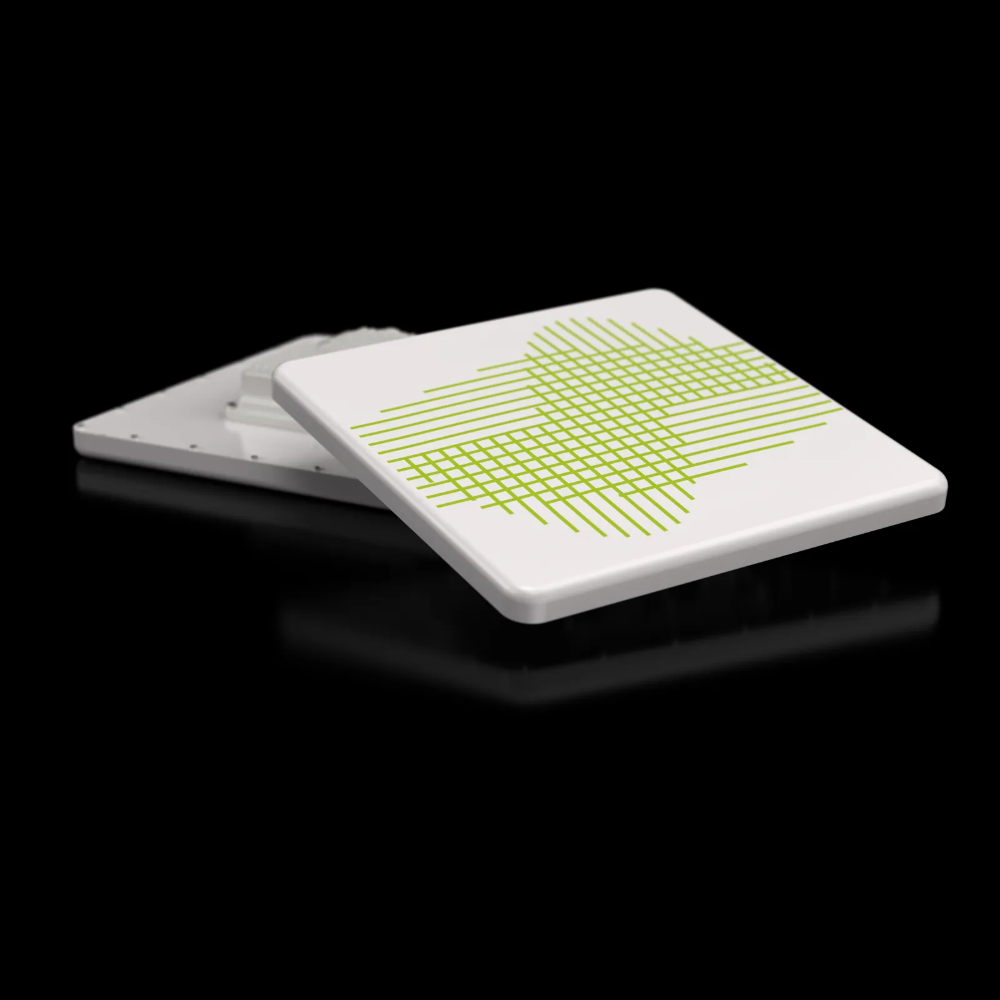
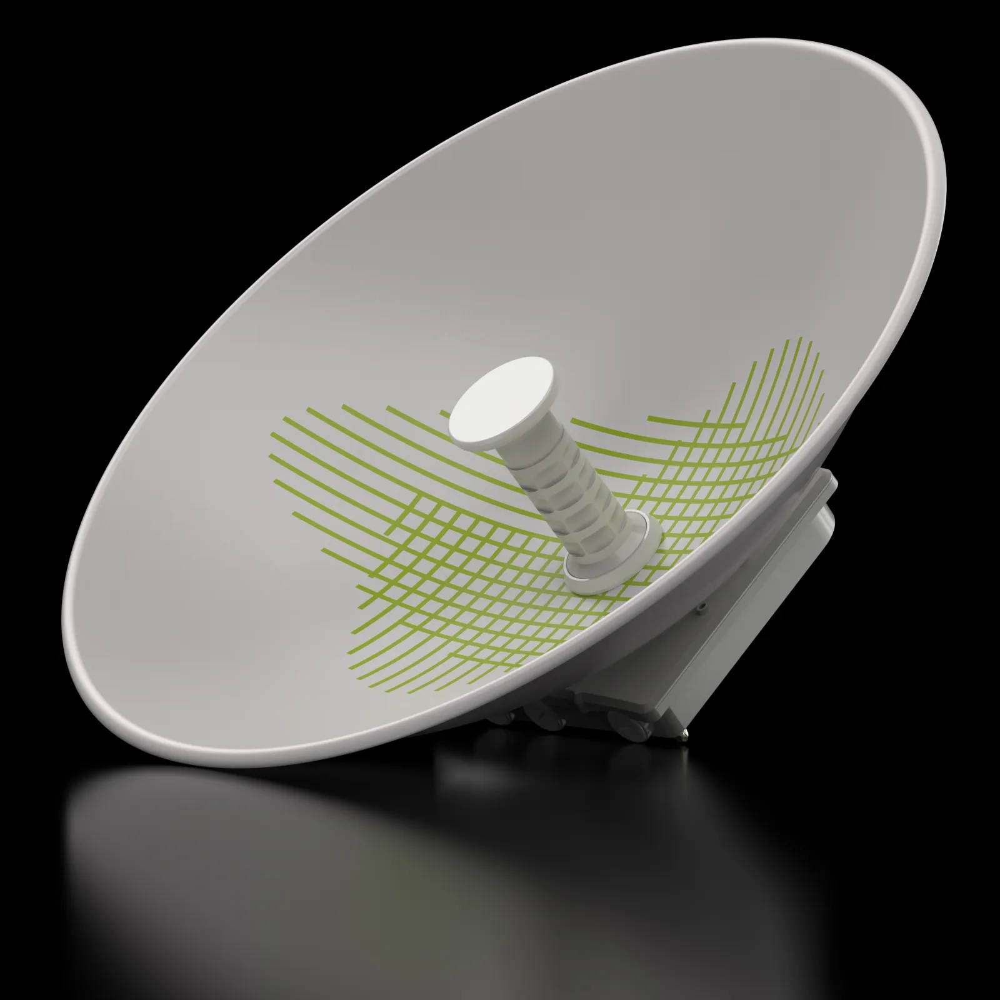
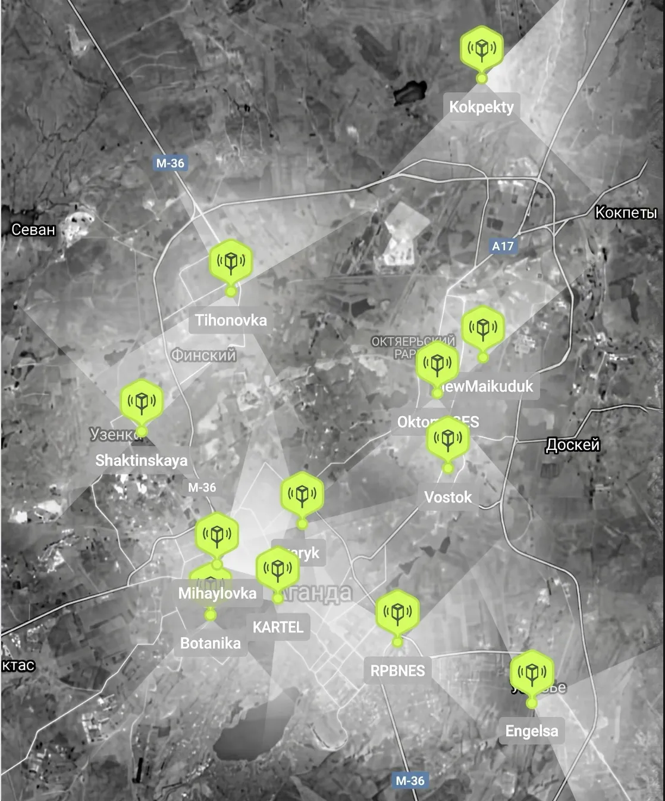
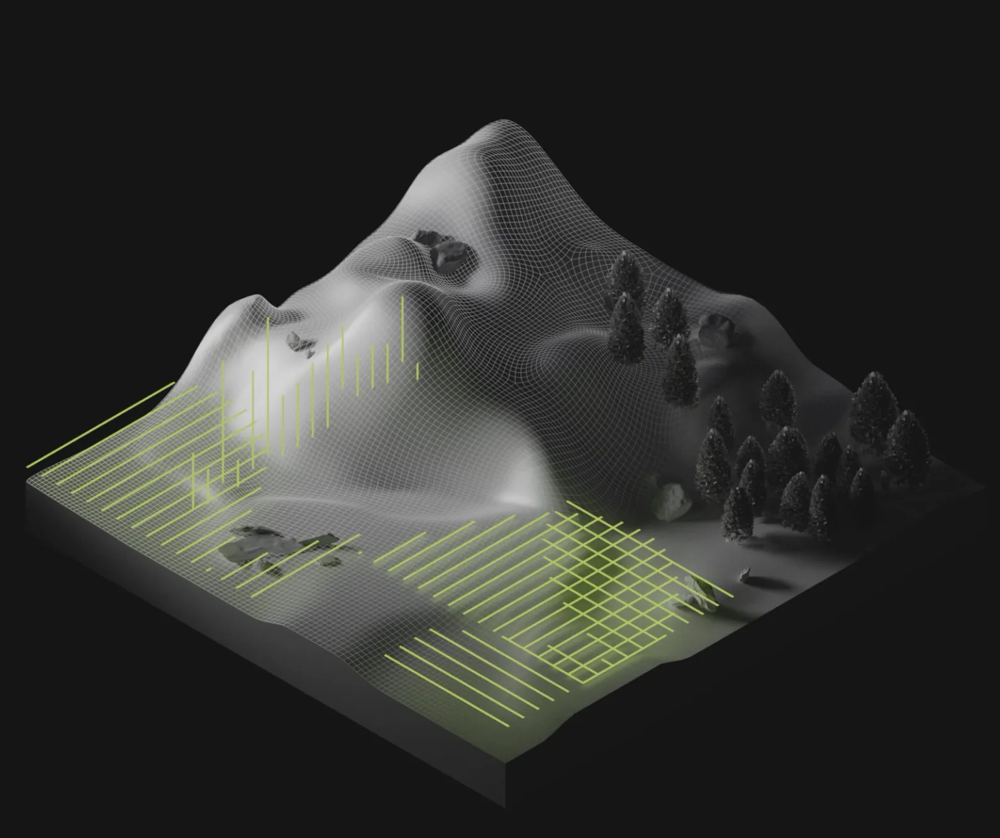

Топология сети
Беспроводная сеть топологии «звезда» для передачи данных между объектами инфраструктуры 15 сетевых районов и центральным узлом управления.
Беспроводная сеть топологии «звезда» для передачи данных между объектами инфраструктуры 15 сетевых районов и центральным узлом управления.

Развертывание магистральных и секторных каналов связи на базе решений Astrawireless в рабочем диапазоне 3,1-3,4 ГГц.

Решение Astrawireless было выбрано для обеспечения стабильной беспроводной передачи данных SCADA с большим количеством удаленных объектов.

Архитектура позволяет подключать новые объекты электросети и расширять зоны покрытия без перестройки всей инфраструктуры, сохраняя совместимость с будущим оборудованием.
